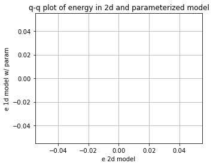
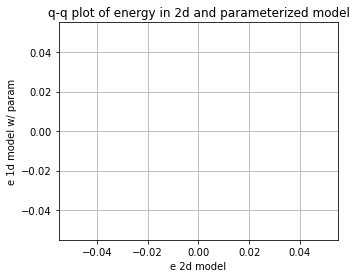

Using neural networks to parameterize advection in L96
Contents
Using neural networks to parameterize advection in L96¶
%matplotlib inline
import math
import matplotlib.pyplot as plt
import numpy as np
from IPython.display import HTML
from L96_model import (
L96,
RK2,
RK4,
EulerFwd,
L96_eq1_xdot,
integrate_L96_2t,
)
from matplotlib.animation import FuncAnimation
time_method = EulerFwd
Introduction¶
We are only going to use the single equation model from Lorenz (1996), or equation 3.1:
The reason we do this is because the advection term has a much larger control on the stability of the system than the scale-interaction term. It is fairly difficult to learn a model for the sub-grid scale term that causes L96 to go unstable so long as the timestep is sufficient to keep the advection term stable.
We want to to look into the stability of a learned parameterization, but to explore the stability in more detail we are going to focus on learning a neural-network for the advection.
It turns out this is rather challening, despite some early indications that it would be easy while I was still learning how to do everything!
Building a 1d and 2d version of the single-equation L96 model:¶
The ‘1d’ in time, or advectionless version of L96 reduces to:
the steady state solution is simply:
and the time-dependent solution is an exponential:
We are going to generate both 2d (w/ advection) and 1d (w/o advection) versions of the L96 model. The 2d model will then be used as training data to build a non-local neural network that can reproduce the effect of including the advection term.
# - This is a standard GCM class including a polynomial parameterization in rhs of equation for tendency.
# In this experiment we will not be using the parameterization in this class but have left it for generality.
class GCM:
def __init__(self, F, parameterization, time_stepping=time_method):
self.F = F
self.parameterization = parameterization
self.time_stepping = time_stepping
def rhs(self, X, param):
return L96_eq1_xdot(X, self.F) + self.parameterization(param, X, self.F)
def __call__(self, X0, dt, nt, param=[0]):
# X0 - initial conditions, dt - time increment, nt - number of forward steps to take
# param - parameters of our closure
time, hist, X = (
dt * np.arange(nt + 1),
np.zeros((nt + 1, len(X0))) * np.nan,
X0.copy(),
)
hist[0] = X
for n in range(nt):
X = self.time_stepping(self.rhs, dt, X, param)
hist[n + 1], time[n + 1] = X, dt * (n + 1)
return hist, time
# - This is the same as the GCM with one notable exception.
# We have set the advection flag to False in the RHS of the L96 equation.
class GCM_1d:
def __init__(self, F, parameterization, time_stepping=time_method):
self.F = F
self.parameterization = parameterization
self.time_stepping = time_stepping
def rhs(self, X, param):
return L96_eq1_xdot(X, self.F, advect=False) + self.parameterization(
param, X, self.F
)
def __call__(self, X0, dt, nt, param=[0]):
# X0 - initial conditions, dt - time increment, nt - number of forward steps to take
# param - parameters of our closure
time, hist, X = (
dt * np.arange(nt + 1),
np.zeros((nt + 1, len(X0))) * np.nan,
X0.copy(),
)
hist[0] = X
for n in range(nt):
X = self.time_stepping(self.rhs, dt, X, param)
hist[n + 1], time[n + 1] = X, dt * (n + 1)
return hist, time
Sample configuration¶
First we will run the 2d and 1d version of the model with a modest forcing of \(F=10\).
We are going to try to simulate the effect of climate model drift on parameter space by running the same model but with \(F=100\).
# Chose a modest forcing and simulate for 100 cycles
Forcing, dt, T = 10, 0.001, 10
Forcing_x10 = Forcing * 10
# Choose an random set of initial conditions
b = 5
init_cond = b * np.random.randn(8)
# ----------------------------------------------------------------
# We create the template 2d GCM here with the polynomial parameterization
# this model will be used to generate training data to learn the advection term.
naive_parameterization = lambda param, X, F: np.polyval(param, X)
gcm_2d = GCM(Forcing, naive_parameterization)
# ----------------------------------------------------------------
# We also create a super GCM for simulation with the forcing of 100.
# This will be used as the truth when we test the ability of the 1d model with the neural network to
# work outside of the parmameter space it was trained.
gcm_2d_x10 = GCM(Forcing_x10, naive_parameterization)
# ----------------------------------------------------------------
# Finally,we build the 1d GCM including the polynomial parameterization,
# and we create the corresponding super GCM with forcing squared.
gcm_1d = GCM_1d(Forcing, naive_parameterization)
gcm_1d_x10 = GCM_1d(Forcing_x10, naive_parameterization)
# Running the 2d and 1d versions of the GCM and GCM with F=100 ("_x10")
x2d, t2d = gcm_2d(
init_cond,
dt,
int(T / dt),
[
0.0,
],
)
x2d_x10, t2d_x10 = gcm_2d_x10(
init_cond,
dt,
int(T / dt),
[
0.0,
],
)
x1d, t1d = gcm_1d(
init_cond,
dt,
int(T / dt),
[
0.0,
],
)
x1d_x10, t1d_x10 = gcm_1d_x10(
init_cond,
dt,
int(T / dt),
[
0.0,
],
)
/usr/share/miniconda/envs/L96M2lines/lib/python3.9/site-packages/numpy/lib/polynomial.py:771: RuntimeWarning: invalid value encountered in multiply
y = y * x + p[i]
Metrics:¶
We are going to track the momentum and energy of L96 via the following metrics:
Energy:¶
These metrics are chosen to track the system. We are looking for a conservative property of the L96 system. It turns out in the single equation form of the L96 problem one of these two metrics is conserved by the advection process, which is the energy like term.
for tup in [2, T]:
F, ax = plt.subplots(1, 2, figsize=(10, 4))
a = ax.ravel()[0]
a.plot(t1d, np.sum(x1d, axis=1), label="1d", color="r", linewidth=2)
a.plot(t2d, np.sum(x2d, axis=1), label="2d", color="b", linewidth=2)
a.legend()
a.grid(True)
a.set_title("L96 momentum")
a.set_xlabel("t")
a.set_ylabel(r"$\sum_k X_k$")
a.set_xlim(0, tup)
a = ax.ravel()[1]
a.plot(t1d, np.sum(x1d**2, axis=1), label="1d", color="r", linewidth=2)
a.plot(t2d, np.sum(x2d**2, axis=1), label="2d", color="b", linewidth=2)
a.legend()
a.grid(True)
a.set_title("L96 energy")
a.set_xlabel("t")
a.set_ylabel(r"$\sum_k X_k^2$")
a.set_xlim(0, tup)
F.tight_layout();


Demo: Conservation of energy in L96¶
To demonstrate the conservation of energy in L96 advection we build a model with 0 forcing and 0 damping.
Note that the cyan line is an experiment only undergoing forcing by the advection term. The momentum is clearly not conserved, but the energy is (maybe not in the Euler Forward case…).
# Zero the forcing
Forcing_demo = 0
# Zero the damping via a linear parameterization term:
P_nodamp = [1.0, 0.0]
# Running the 2d and 1d versions of the GCM and GCM with squared forcing ("s")
gcm_2d_demo = GCM(Forcing_demo, naive_parameterization)
# The parameterization here is countering the decay term to demonstrate the conservation of this system
x2d_demo, t2d_demo = gcm_2d_demo(init_cond, dt, int(T / dt), P_nodamp)
for tup in [2, T]:
F, ax = plt.subplots(1, 2, figsize=(10, 4))
a = ax.ravel()[0]
a.plot(
t2d_demo,
np.sum(x2d_demo, axis=1),
label="2d, F=0 no damp",
color="c",
linewidth=2,
)
a.plot(t2d, np.sum(x2d, axis=1), label="2d, F=10", color="b", linewidth=2)
a.legend()
a.grid(True)
a.set_title("L96 momentum")
a.set_xlabel("t")
a.set_ylabel(r"$\sum_k X_k$")
a.set_xlim(0, tup)
a = ax.ravel()[1]
a.plot(
t2d_demo,
np.sum(x2d_demo**2, axis=1),
label="2d, F=0 no damp",
color="c",
linewidth=2,
)
a.plot(t2d, np.sum(x2d**2, axis=1), label="2d, F=10", color="b", linewidth=2)
a.legend()
a.grid(True)
a.set_title("L96 energy")
a.set_xlabel("t")
a.set_ylabel(r"$\sum_k X_k^2$")
a.set_xlim(0, tup)
F.tight_layout();


Building a dataset of advection tendencies to learn¶
In the next section we are going to create a dataset of advection tendencies to learn
N = 50000
X = []
Xm1 = []
Xm2 = []
Xp1 = []
Adv = []
# randomize the initial condition and run 1000 time-step spin up with the real world model
init_condr = 10 * np.random.randn(8)
x_2, _ = gcm_2d(
init_condr,
0.001,
1000,
[
0.0,
],
)
for ti in range(N):
# Set the initial condition from the spin up/2d model
init_condr_up = x_2[-1, :]
# Real world values
x_2, _ = gcm_2d(
init_condr_up,
0.001,
1,
[
0.0,
],
)
# Simple model values
x_1, _ = gcm_1d(
init_condr_up,
0.001,
1,
[
0.0,
],
)
# This is the difference in the tendency term due to neglecting 2d processes per time-step
Adv.append((x_2[-1, :] - x_1[-1, :]).ravel() / 0.001)
# Storing the state variable and its rolled forms for plotting and learning convenience
X.append(x_1[-1, :].ravel())
Xm1.append(np.roll(x_1[-1, :], 1).ravel())
Xm2.append(np.roll(x_1[-1, :], 2).ravel())
Xp1.append(np.roll(x_1[-1, :], -1).ravel())
X = np.array(X)
Xm1 = np.array(Xm1)
Xm2 = np.array(Xm2)
Xp1 = np.array(Xp1)
Adv = np.array(Adv)
Choosing a parameter to parameterize from¶
If we were simply looking at data and knew that the advection term was a missing force, we might start by looking at correlations with \(X_k\) values, but we would quickly relize that this is not effective.
Even taking part of the actual advection term does not yield a useful feature parameter
plt.figure()
plt.plot(X, Adv, "k.")
plt.xlabel("$X_{k}$")
plt.ylabel("Advection")
plt.figure()
plt.plot(Xm1, Adv, "k.")
plt.xlabel("$X_{k-1}$")
plt.ylabel("Advection")
plt.figure()
plt.plot(Xp1, Adv, "k.")
plt.xlabel("$X_{k+1}$")
plt.ylabel("Advection")
plt.figure()
plt.plot(Xm2 - Xp1, Adv, "k.")
plt.xlabel("$X_{k-2}-X_{k+1}$")
plt.ylabel("Advection")
Text(0, 0.5, 'Advection')


Let’s now just assume that we knew the form of the advection term. We now get something that looks like a 1:1 linear relationship between the observed advection term and the correct feature parameter. It is not perfect because the values we are using for \(X_k\) are not consistent with the RK4 time stepping (if we used forward Euler we would get a perfit fit).
# We are going to assume we know the feature variable that we need to train the model.
# However, because of sampling across a time-step we will not fit a perfect 1:1,
# we end up with something very close to 1:1, but we will use a higher order polynomial that will
# fail when used outside the training data.
plt.figure(figsize=(5, 4))
Feature = -Xm1 * (np.array(Xm2) - np.array(Xp1))
plt.plot(Feature, Adv, "r.")
plt.xlabel("$X_{k-1}(X_{k-2}-X_{k+1})$")
plt.ylabel("Advection tendency")
# Here use a 10th order polynomial that is it to the advection tendencies.
# This parameterization will probably fail when used outside of the training data.
P = np.polyfit(np.array(Feature).ravel(), np.array(Adv).ravel(), 1)
print("Fit (slope/bias): ", P)
FS = [-200, 200]
plt.plot(FS, np.polyval(P, FS), "g-", label="polynomial parameterization")
plt.plot(FS, FS, "k--", label="1:1")
plt.xlim(-200, 200)
plt.ylim(-200, 200)
plt.grid(True)
Fit (slope/bias): [ 1.00109668 -0.00672231]

# Create a new 1d GCM with a parameterization for the advection based on the known advection parameter
advection_parameterization = lambda param, X, F: np.polyval(
param, -np.roll(X, 1) * (np.roll(X, 2) - np.roll(X, -1))
)
gcm_1d_padv = GCM_1d(Forcing, advection_parameterization)
gcm_1d_padv_x10 = GCM_1d(Forcing_x10, advection_parameterization)
# Here is the 1d GCM with the learned advection via the linear parameterization
xplinear, tplinear = gcm_1d_padv(init_cond, dt, int(T / dt), P)
# And the same 1d GCM applied out of sample
xplinear_x10, tplinear_x10 = gcm_1d_padv_x10(init_cond, dt, int(T / dt), P)
/tmp/ipykernel_4136/2415865238.py:3: RuntimeWarning: overflow encountered in multiply
param, -np.roll(X, 1) * (np.roll(X, 2) - np.roll(X, -1))
/usr/share/miniconda/envs/L96M2lines/lib/python3.9/site-packages/numpy/lib/polynomial.py:771: RuntimeWarning: invalid value encountered in multiply
y = y * x + p[i]
def CompExps(Exp1, ExpN):
# Exp1 - reference experiment list
# ExpN - list of comparison experiments
try:
T1 = Exp1[0]
X1 = Exp1[1]
L1 = Exp1[2]
F, ax = plt.subplots(1, 2, figsize=(10, 4))
a = ax.ravel()[0]
a.plot(T1, np.sum(X1, axis=1), label=L1, color="k", linewidth=3)
a = ax.ravel()[1]
a.plot(T1, np.sum(X1**2, axis=1), label=L1, color="k", linewidth=3)
F2, ax2 = plt.subplots(1, figsize=(5, 4))
for Exp in ExpN:
TN = Exp[0]
XN = Exp[1]
LN = Exp[2]
a = ax.ravel()[0]
a.plot(TN, np.sum(XN, axis=1), label=LN, linewidth=2)
a = ax.ravel()[1]
a.plot(TN, np.sum(XN**2, axis=1), label=LN, linewidth=2)
_X = []
_Y = []
for ii in range(1, 100, 1):
_X.append(np.percentile(np.sum(X1[int(5 // dt) :] ** 2, axis=1), ii))
_Y.append(np.percentile(np.sum(XN[int(5 // dt) :] ** 2, axis=1), ii))
ax2.plot(_X, _Y, ".-", label=LN)
for ii in range(2):
a = ax.ravel()[ii]
a.legend()
a.grid(True)
ax[0].set(ylabel=r"$\sum_k X_k$", xlabel=r"$t$")
ax[1].set(ylabel=r"$\sum_k X_k^2$", xlabel=r"$t$")
F.tight_layout()
ax2.grid(True)
ax2.set(
xlabel="e 2d model",
ylabel="e 1d model w/ param",
title="q-q plot of energy in 2d and parameterized model",
)
LIM = np.nanmax(list(_X) + list(_Y))
ax2.set_xlim(0, LIM * 1.1)
ax2.set_ylim(0, LIM * 1.1)
ax2.plot([0, LIM], [0, LIM], "y-")
pass
except:
pass
CompExps(
[t2d, x2d, "2d"],
[
[tplinear, xplinear, "1d w/ linear"],
],
)


CompExps(
[t2d_x10, x2d_x10, "2d"],
[
[tplinear_x10, xplinear_x10, "1d w/ linear"],
],
)
/usr/share/miniconda/envs/L96M2lines/lib/python3.9/site-packages/numpy/core/fromnumeric.py:86: RuntimeWarning: invalid value encountered in reduce
return ufunc.reduce(obj, axis, dtype, out, **passkwargs)
/tmp/ipykernel_4136/2792372065.py:13: RuntimeWarning: overflow encountered in square
a.plot(T1, np.sum(X1**2, axis=1), label=L1, color="k", linewidth=3)
/tmp/ipykernel_4136/2792372065.py:25: RuntimeWarning: overflow encountered in square
a.plot(TN, np.sum(XN**2, axis=1), label=LN, linewidth=2)
/tmp/ipykernel_4136/2792372065.py:48: RuntimeWarning: All-NaN axis encountered
LIM = np.nanmax(list(_X) + list(_Y))
 

What if we chose the wrong feature?¶
It turns out you can find features that are approximately correct and build a decent model for the advection
# Now we use a feature that is wrong to train the model
plt.figure()
Feature = -(np.array(Xm2) - np.array(Xp1) * np.array(Xm1))
plt.plot(Feature, Adv, "r.")
plt.xlabel("$(X_{k-1}-X_{k+1})$")
plt.ylabel("Advection tendency/Forcing")
# Here use a 10th order polynomial that is it to the advection tendencies.
# This parameterization will probably fail when used outside of the training data.
P_wrong = np.polyfit(np.array(Feature).ravel(), np.array(Adv).ravel(), 1)
FS = np.sort(np.array(Feature).ravel())
plt.plot(FS, np.polyval(P_wrong, FS), "g-", label="polynomial parameterization");

# Create a new 1d GCM with a 2d parameterization
advection_parameterization_wrong = lambda param, X, F: np.polyval(
param, -(np.roll(X, 2) - np.roll(X, -1) * np.roll(X, 1))
)
gcm_1d_padv_wrong = GCM_1d(Forcing, advection_parameterization_wrong)
# Here is the 1d GCM with the learned advection via the 10th order polynomial
x_wrongp, t_wrongp = gcm_1d_padv_wrong(init_cond, dt, int(T / dt), P_wrong)
CompExps(
[t2d, x2d, "2d"],
[
[t_wrongp, x_wrongp, "1d w/ wrong linear"],
],
)
/tmp/ipykernel_4136/2520304281.py:3: RuntimeWarning: overflow encountered in multiply
param, -(np.roll(X, 2) - np.roll(X, -1) * np.roll(X, 1))
/tmp/ipykernel_4136/2792372065.py:25: RuntimeWarning: overflow encountered in square
a.plot(TN, np.sum(XN**2, axis=1), label=LN, linewidth=2)


Using the wrong feature gave us a very unstable model with advection that does not work.
In the following, we will try to learn the advection from a neural network. This result shows that we need to do something quite skillful to have a stable system.
Using the 3-layer non-local neural network¶
Now we can forget about neading to know the right form of the advection term. We are instead just going to throw the information from the advection scheme to the non-local neural network and let it learn the advection for itself.
These follow the templates from the exercise led by Janni in week 4.
I’m quite new to neural networks, so please let me know if you see any obvious mistakes in my approach!
import torch
import torch.nn.functional as F
import torch.utils.data as Data
import torchvision
from sklearn.metrics import r2_score
from torch import nn, optim
from torch.autograd import Variable
from torch_lr_finder import LRFinder
np.random.seed(14) # For reproducibility
torch.manual_seed(14) # For reproducibility
<torch._C.Generator at 0x7fe22984a430>
I’m going to start by scaling the data so that it is approximately order 1.¶
It looks like we can scaling \(X\) and the advection with the forcing and forcing squared, respectively (we will come back to this assumption).
plt.figure()
plt.plot(X, Adv, "k.")
plt.xlabel("$X_k$")
plt.ylabel("$Adv_k$")
X_F = X / Forcing
Adv_F = Adv / Forcing**2
print("Advection RMS:", np.sqrt(np.mean(Adv**2)))
print("X RMS:", np.sqrt(np.mean(X**2)))
plt.figure()
plt.plot(X_F, Adv_F, "k.")
plt.xlabel("$X_k/F$")
plt.ylabel("$Adv_k/F^2$")
print("Scaled Advection RMS:", np.sqrt(np.mean(Adv_F**2)))
print("Scaled X RMS:", np.sqrt(np.mean(X_F**2)))
Advection RMS: 29.00298795049557
X RMS: 5.0348910237275355
Scaled Advection RMS: 0.29002987950495573
Scaled X RMS: 0.5034891023727537


# Split into 80% training and 20% testing.
L = int(len(X) * 0.8)
# Create non local training data
# Define a data loader (8 inputs, 8 outputs)
# Define our X,Y pairs (state, subgrid tendency) for the linear regression local network.local_torch_dataset = Data.TensorDataset(
torch_dataset = Data.TensorDataset(
torch.from_numpy(np.array(X_F[:L])).double(),
torch.from_numpy(np.array(Adv_F[:L])).double(),
)
BATCH_SIZE = 1024 # Number of sample in each batch
loader = Data.DataLoader(dataset=torch_dataset, batch_size=BATCH_SIZE, shuffle=True)
print("N training data: ", len(X_F[:L]))
N training data: 40000
print("N testing data: ", len(X_F[L:]))
# Define a test dataloader (8 inputs, 8 outputs)
torch_dataset_test = Data.TensorDataset(
torch.from_numpy(np.array(X_F[L:])).double(),
torch.from_numpy(np.array(Adv_F[L:])).double(),
)
loader_test = Data.DataLoader(
dataset=torch_dataset_test, batch_size=BATCH_SIZE, shuffle=True
)
N testing data: 10000
# define network structure in pytorch
import torch.nn.functional as FF
class Net_ANN(nn.Module):
def __init__(self):
super(Net_ANN, self).__init__()
self.linear1 = nn.Linear(8, 16) # 8 inputs, 16 neurons for first hidden layer
self.linear2 = nn.Linear(16, 16) # 16 neurons for second hidden layer
self.linear3 = nn.Linear(16, 8) # 8 outputs
# self.lin_drop = nn.Dropout(0.1) #regularization method to prevent overfitting.
def forward(self, x):
x = FF.relu(self.linear1(x))
x = FF.relu(self.linear2(x))
x = self.linear3(x)
return x
def train_model(net, criterion, trainloader, optimizer):
net.train()
test_loss = 0
for step, (batch_x, batch_y) in enumerate(trainloader): # for each training step
b_x = Variable(batch_x) # Inputs
b_y = Variable(batch_y) # outputs
if (
len(b_x.shape) == 1
): # If is needed to add a dummy dimension if our inputs are 1D (where each number is a different sample)
prediction = torch.squeeze(
net(torch.unsqueeze(b_x, 1))
) # input x and predict based on x
else:
prediction = net(b_x)
loss = criterion(prediction, b_y) # Calculating loss
optimizer.zero_grad() # clear gradients for next train
loss.backward() # backpropagation, compute gradients
optimizer.step() # apply gradients to update weights
def test_model(net, criterion, trainloader, optimizer, text="validation"):
net.eval() # Evaluation mode (important when having dropout layers)
test_loss = 0
with torch.no_grad():
for step, (batch_x, batch_y) in enumerate(
trainloader
): # for each training step
b_x = Variable(batch_x) # Inputs
b_y = Variable(batch_y) # outputs
if (
len(b_x.shape) == 1
): # If is needed to add a dummy dimension if our inputs are 1D (where each number is a different sample)
prediction = torch.squeeze(
net(torch.unsqueeze(b_x, 1))
) # input x and predict based on x
else:
prediction = net(b_x)
loss = criterion(prediction, b_y) # Calculating loss
test_loss = test_loss + loss.data.numpy() # Keep track of the loss
test_loss /= len(trainloader) # dividing by the number of batches
# print(len(trainloader))
print(text + " loss:", test_loss)
return test_loss
criterion = torch.nn.MSELoss() # MSE loss function
torch.manual_seed(14) # For reproducibility
nn_3l = Net_ANN().double()
n_epochs = 20 # Number of epocs
optimizer = optim.Adam(nn_3l.parameters(), lr=0.03)
validation_loss = list()
train_loss = list()
# time0 = time()
for epoch in range(1, n_epochs + 1):
train_model(nn_3l, criterion, loader, optimizer)
train_loss.append(test_model(nn_3l, criterion, loader, optimizer, "train"))
validation_loss.append(test_model(nn_3l, criterion, loader_test, optimizer))
plt.plot(train_loss, "b", label="training loss")
plt.plot(validation_loss, "r", label="validation loss")
plt.legend();
train loss: 0.025454512983962264
validation loss: 0.029896219295090093
train loss: 0.014711594796407625
validation loss: 0.01818788201190382
train loss: 0.011790757551660766
validation loss: 0.015069611943381028
train loss: 0.00963342060293426
validation loss: 0.014019802781850504
train loss: 0.00972731094538683
validation loss: 0.014381238663691162
train loss: 0.00957547708299987
validation loss: 0.014397091734967362
train loss: 0.008633445013620643
validation loss: 0.013305068762908457
train loss: 0.009876379668258469
validation loss: 0.015243490819829193
train loss: 0.008496980209829464
validation loss: 0.013389483174061533
train loss: 0.00837703261327119
validation loss: 0.013530233487467413
train loss: 0.007719160531872794
validation loss: 0.013090476795163735
train loss: 0.008357143723526481
validation loss: 0.013797614326126575
train loss: 0.008050591629123312
validation loss: 0.013486228435823991
train loss: 0.008274800041250257
validation loss: 0.013032447082030848
train loss: 0.007367561768834038
validation loss: 0.012316985925665895
train loss: 0.007557409602506794
validation loss: 0.013038283106842777
train loss: 0.008356218325802243
validation loss: 0.013052207476573407
train loss: 0.006703404984219534
validation loss: 0.011614166269105403
train loss: 0.007788277088784415
validation loss: 0.01229599589504025
train loss: 0.007170371477179058
validation loss: 0.012308128349019253

# The neural network does a pretty good job predicting the advection tendencies
preds22 = nn_3l(torch.from_numpy(np.array(X_F)).double())
plt.figure()
plt.plot(preds22.detach().numpy()[0:, 2], label="NN Predicted values")
plt.plot(Adv_F[:, 2], label="True values")
plt.legend()
plt.figure()
plt.plot(Adv_F[:, 2], preds22.detach().numpy()[0:, 2], "k.")
plt.xlabel("Actual")
plt.ylabel("Prediction")
pass
Xt = init_cond
Advr = -np.roll(Xt, 1) * (np.roll(Xt, 2) - np.roll(Xt, -1))
nnAdv = nn_3l(torch.from_numpy(np.array(Xt / Forcing)).double()).detach().numpy()
plt.figure()
plt.plot(Advr, "k-")
plt.plot(nnAdv * Forcing**2, "r-")
[<matplotlib.lines.Line2D at 0x7fe20f043ca0>]


# - a GCM class including a neural network parameterization in rhs of equation for tendency
class GCM_network:
def __init__(self, F, network, time_stepping=time_method):
self.F = F
self.network = network
self.time_stepping = time_stepping
def rhs(self, X, param):
if self.network.linear1.in_features == 1:
X_torch = torch.from_numpy(X / self.F).double()
X_torch = torch.unsqueeze(X_torch, 1)
else:
X_torch = torch.from_numpy(np.expand_dims(X / self.F, 0)).double()
return L96_eq1_xdot(
X,
self.F + self.F**2 * np.squeeze(self.network(X_torch).data.numpy()),
advect=False,
) # Adding NN parameterization
def __call__(self, X0, dt, nt, param=[0]):
# X0 - initial conditions, dt - time increment, nt - number of forward steps to take
# param - parameters of our closure
time, hist, X = (
dt * np.arange(nt + 1),
np.zeros((nt + 1, len(X0))) * np.nan,
X0.copy(),
)
hist[0] = X
for n in range(nt):
X = self.time_stepping(self.rhs, dt, X, param)
hist[n + 1], time[n + 1] = X, dt * (n + 1)
return hist, time
# Run a test with the parameterization
gcm_nn = GCM_network(Forcing, nn_3l)
xnn, tnn = gcm_nn(init_cond, dt, int(T / (dt)), nn_3l)
gcm_nn_x10 = GCM_network(Forcing_x10, nn_3l)
xnn_x10, tnn_x10 = gcm_nn_x10(init_cond, dt, int(T / (dt)), nn_3l)
CompExps(
[t2d, x2d, "2d"],
[
[tnn, xnn, "1d w/ neural network"],
],
)


CompExps(
[t2d_x10, x2d_x10, "2d"],
[
[tnn_x10, xnn_x10, "1d w/ neural network"],
],
)
/usr/share/miniconda/envs/L96M2lines/lib/python3.9/site-packages/numpy/core/fromnumeric.py:86: RuntimeWarning: invalid value encountered in reduce
return ufunc.reduce(obj, axis, dtype, out, **passkwargs)
/tmp/ipykernel_4136/2792372065.py:13: RuntimeWarning: overflow encountered in square
a.plot(T1, np.sum(X1**2, axis=1), label=L1, color="k", linewidth=3)


def my_loss2(inpt, output, target):
# In which we add conservation of "momentum" to our loss function
loss = torch.mean(2 * (output - target) ** 2) + torch.mean(
torch.sum(output, axis=1) ** 2
)
return loss
def train_model2(net, criterion, trainloader, optimizer):
net.train()
test_loss = 0
for step, (batch_x, batch_y) in enumerate(trainloader): # for each training step
b_x = Variable(batch_x) # Inputs
b_y = Variable(batch_y) # outputs
if (
len(b_x.shape) == 1
): # If is needed to add a dummy dimension if our inputs are 1D (where each number is a different sample)
prediction = torch.squeeze(
net(torch.unsqueeze(b_x, 1))
) # input x and predict based on x
else:
prediction = net(b_x)
loss = criterion(b_x, prediction, b_y) # Calculating loss
optimizer.zero_grad() # clear gradients for next train
loss.backward() # backpropagation, compute gradients
optimizer.step() # apply gradients to update weights
def test_model2(net, criterion, trainloader, optimizer, text="validation"):
net.eval() # Evaluation mode (important when having dropout layers)
test_loss = 0
with torch.no_grad():
for step, (batch_x, batch_y) in enumerate(
trainloader
): # for each training step
b_x = Variable(batch_x) # Inputs
b_y = Variable(batch_y) # outputs
if (
len(b_x.shape) == 1
): # If is needed to add a dummy dimension if our inputs are 1D (where each number is a different sample)
prediction = torch.squeeze(
net(torch.unsqueeze(b_x, 1))
) # input x and predict based on x
else:
prediction = net(b_x)
loss = criterion(b_x, prediction, b_y) # Calculating loss
test_loss = test_loss + loss.data.numpy() # Keep track of the loss
test_loss /= len(trainloader) # dividing by the number of batches
# print(len(trainloader))
print(text + " loss:", test_loss)
return test_loss
torch.manual_seed(14) # For reproducibility
nn_3l_loss2 = Net_ANN().double()
n_epochs = 30 # Number of epocs
optimizer = optim.Adam(nn_3l_loss2.parameters(), lr=0.02)
validation_loss = list()
train_loss = list()
# time0 = time()
for epoch in range(1, n_epochs + 1):
train_model2(nn_3l_loss2, my_loss2, loader, optimizer)
train_loss.append(test_model2(nn_3l_loss2, my_loss2, loader, optimizer, "train"))
validation_loss.append(test_model2(nn_3l_loss2, my_loss2, loader_test, optimizer))
plt.plot(train_loss, "b", label="training loss")
plt.plot(validation_loss, "r", label="validation loss")
plt.legend();
train loss: 0.13729969522566543
validation loss: 0.13495607792471004
train loss: 0.09007175658741413
validation loss: 0.09396258755131008
train loss: 0.06757389516300552
validation loss: 0.07375343296632311
train loss: 0.05877047915091353
validation loss: 0.06438496703714977
train loss: 0.05329633082449433
validation loss: 0.05954946498511896
train loss: 0.05067808966850118
validation loss: 0.055643695785485135
train loss: 0.04895898054377313
validation loss: 0.05706104437767952
train loss: 0.04615613135084835
validation loss: 0.05423857442147197
train loss: 0.041598160920459565
validation loss: 0.05010495477802922
train loss: 0.039688993475053905
validation loss: 0.048364006466033733
train loss: 0.0380333536152653
validation loss: 0.046270566768216136
train loss: 0.03724221867502071
validation loss: 0.044822620093173046
train loss: 0.0372604933629242
validation loss: 0.045920504665334164
train loss: 0.036055444534018474
validation loss: 0.045044335081747544
train loss: 0.03645842638541934
validation loss: 0.04665281419027853
train loss: 0.03529536445040824
validation loss: 0.04767475693242544
train loss: 0.03432023241706224
validation loss: 0.0464158626114763
train loss: 0.0341263567820118
validation loss: 0.04536408491778602
train loss: 0.033211665331690766
validation loss: 0.04599238689542465
train loss: 0.03313420716449468
validation loss: 0.04447194150953777
train loss: 0.032362758491029084
validation loss: 0.04457123352413053
train loss: 0.03286446921967917
validation loss: 0.04501586440820769
train loss: 0.03152304678896968
validation loss: 0.042541660190262946
train loss: 0.032962595714009175
validation loss: 0.045570695637576396
train loss: 0.03166836803167918
validation loss: 0.044438142280729495
train loss: 0.031073850101526596
validation loss: 0.04424230263396498
train loss: 0.03131701867086252
validation loss: 0.04420787757055083
train loss: 0.030975669386370353
validation loss: 0.04431874942385126
train loss: 0.03226903783182003
validation loss: 0.045263450561051216
train loss: 0.031584638910022625
validation loss: 0.044073479745598367

# The neural network does a pretty good job predicting the advection tendencies
preds22o = nn_3l(torch.from_numpy(np.array(X_F)).double())
preds22 = nn_3l_loss2(torch.from_numpy(np.array(X_F)).double())
plt.figure()
plt.plot(preds22.detach().numpy()[0:, 2], label="NN Predicted values")
plt.plot(Adv_F[:, 2], label="True values")
plt.legend()
plt.figure()
plt.plot(Adv_F[:, 2], preds22.detach().numpy()[0:, 2], "k.")
plt.xlabel("Actual")
plt.ylabel("Prediction")
plt.figure()
plt.plot(np.sum(preds22o.detach().numpy(), axis=1), "r.")
plt.plot(np.sum(preds22.detach().numpy(), axis=1), "k.")
plt.ylabel("Prediction momentum")
Xt = init_cond
Advr = -np.roll(Xt, 1) * (np.roll(Xt, 2) - np.roll(Xt, -1))
nnAdv = nn_3l_loss2(torch.from_numpy(np.array(Xt / Forcing)).double()).detach().numpy()
plt.figure()
plt.plot(Advr, "k-", label="actual")
plt.plot(nnAdv * Forcing**2, "r-", label="predicted")
pass;


gcm_nn2 = GCM_network(Forcing, nn_3l_loss2)
xnn2, tnn2 = gcm_nn2(init_cond, dt, int(T / (dt)), nn_3l_loss2)
gcm_nn2_x10 = GCM_network(Forcing_x10, nn_3l_loss2)
xnn2_x10, tnn2_x10 = gcm_nn2_x10(init_cond, dt, int(T / (dt)), nn_3l_loss2)
CompExps(
[t2d, x2d, "2d"],
[
[tnn2, xnn2, "1d w/ NN conserving momentum"],
],
)


CompExps(
[t2d_x10, x2d_x10, "2d"],
[
[tnn2_x10, xnn2_x10, "1d w/ NN conserving momentum"],
],
)
/tmp/ipykernel_4136/2792372065.py:13: RuntimeWarning: overflow encountered in square
a.plot(T1, np.sum(X1**2, axis=1), label=L1, color="k", linewidth=3)


How about with some regularization?¶
torch.manual_seed(14) # For reproducibility
nn_3l_loss3 = Net_ANN().double()
n_epochs = 50 # Number of epocs
optimizer = optim.Adam(nn_3l_loss3.parameters(), lr=0.01, weight_decay=0.01)
validation_loss = list()
train_loss = list()
# time0 = time()
for epoch in range(1, n_epochs + 1):
train_model2(nn_3l_loss3, my_loss2, loader, optimizer)
train_loss.append(test_model2(nn_3l_loss3, my_loss2, loader, optimizer, "train"))
validation_loss.append(test_model2(nn_3l_loss3, my_loss2, loader_test, optimizer))
plt.plot(train_loss, "b", label="training loss")
plt.plot(validation_loss, "r", label="validation loss")
plt.legend();
train loss: 0.15465337100992943
validation loss: 0.1451259337686996
train loss: 0.13401283383599133
validation loss: 0.12800815911080857
train loss: 0.11989964260646642
validation loss: 0.11919847088544684
train loss: 0.11596258375216148
validation loss: 0.1169901045653516
train loss: 0.11490474927725358
validation loss: 0.11695319072340862
train loss: 0.11512185330768199
validation loss: 0.11617013132032135
train loss: 0.11456968623289017
validation loss: 0.11597432705916004
train loss: 0.11475302951962477
validation loss: 0.1160207484762176
train loss: 0.11448268207813217
validation loss: 0.11636920893959928
train loss: 0.11438898750197349
validation loss: 0.1155462874569918
train loss: 0.11401944135606726
validation loss: 0.11610277334519173
train loss: 0.11388711280258487
validation loss: 0.11570999045242167
train loss: 0.11282655126820369
validation loss: 0.11502481164170227
train loss: 0.11335432184462561
validation loss: 0.11440884541342651
train loss: 0.11240802855017865
validation loss: 0.11352533907962177
train loss: 0.1106338525694269
validation loss: 0.11197550215099157
train loss: 0.10893317928213128
validation loss: 0.11087220570514396
train loss: 0.10837537866107735
validation loss: 0.11107516525112801
train loss: 0.10754193912049523
validation loss: 0.10922537481922001
train loss: 0.10695357074629012
validation loss: 0.10932115776689391
train loss: 0.1054621789168803
validation loss: 0.10877671589139178
train loss: 0.10528336951748503
validation loss: 0.10783729524654986
train loss: 0.10415999356737127
validation loss: 0.1062519879541908
train loss: 0.10329535439606412
validation loss: 0.10579320956638334
train loss: 0.10142078208765384
validation loss: 0.1036557261077039
train loss: 0.10062894539402903
validation loss: 0.10329457428694067
train loss: 0.10019666516872953
validation loss: 0.10326916063369611
train loss: 0.0996408219078753
validation loss: 0.10228554617325683
train loss: 0.09918013173115321
validation loss: 0.10274405404067569
train loss: 0.0994182165049126
validation loss: 0.10285129138937141
train loss: 0.09934806826157831
validation loss: 0.10245156652546554
train loss: 0.09911010334031461
validation loss: 0.10287036428699148
train loss: 0.09858121106748208
validation loss: 0.10218609868371702
train loss: 0.09869526805562007
validation loss: 0.10156913827069372
train loss: 0.09902897098837371
validation loss: 0.10242344297647472
train loss: 0.09902102164187886
validation loss: 0.10240996846773134
train loss: 0.09868346067983035
validation loss: 0.10243144213803668
train loss: 0.09792877598399201
validation loss: 0.10267711495779597
train loss: 0.09911508608811963
validation loss: 0.10227178205321966
train loss: 0.09850230151151626
validation loss: 0.102210987610006
train loss: 0.09954052776312161
validation loss: 0.10249324254461308
train loss: 0.09913842242828792
validation loss: 0.10221578578727494
train loss: 0.09787803974272553
validation loss: 0.1015903854068712
train loss: 0.09858365025591757
validation loss: 0.10211560859210045
train loss: 0.09973717587062245
validation loss: 0.10274375744090511
train loss: 0.09854081198430766
validation loss: 0.10189191633190256
train loss: 0.09958750772143302
validation loss: 0.10269710963685541
train loss: 0.0987614795314351
validation loss: 0.10185670174092976
train loss: 0.0982985837862703
validation loss: 0.10245657069443379
train loss: 0.09895724520349267
validation loss: 0.10231815165144834

# The neural network does a pretty good job predicting the advection tendencies
preds22o = nn_3l(torch.from_numpy(np.array(X_F)).double())
preds22 = nn_3l_loss3(torch.from_numpy(np.array(X_F)).double())
plt.figure()
plt.plot(preds22.detach().numpy()[0:, 2], label="NN Predicted values")
plt.plot(Adv_F[:, 2], label="True values")
plt.legend()
plt.figure()
plt.plot(Adv_F[:, 2], preds22.detach().numpy()[0:, 2], "k.")
plt.xlabel("Actual")
plt.ylabel("Prediction")
plt.figure()
plt.plot(np.sum(preds22o.detach().numpy(), axis=1), "r.")
plt.plot(np.sum(preds22.detach().numpy(), axis=1), "k.")
plt.ylabel("Prediction momentum")
Xt = init_cond
Advr = -np.roll(Xt, 1) * (np.roll(Xt, 2) - np.roll(Xt, -1))
nnAdv = nn_3l_loss3(torch.from_numpy(np.array(Xt / Forcing)).double()).detach().numpy()
plt.figure()
plt.plot(Advr, "k-", label="actual")
plt.plot(nnAdv * Forcing**2, "r-", label="predicted")
pass;


gcm_nn3 = GCM_network(Forcing, nn_3l_loss3)
xnn3, tnn3 = gcm_nn3(init_cond, dt, int(T / (dt)), nn_3l_loss3)
gcm_nn3_x10 = GCM_network(Forcing_x10, nn_3l_loss3)
xnn3_x10, tnn3_x10 = gcm_nn3_x10(init_cond, dt, int(T / (dt)), nn_3l_loss3)
CompExps(
[t2d, x2d, "2d"],
[
[tnn3, xnn3, "1d w/ NN momentum reg."],
[t1d, x1d, "1d "],
],
)


CompExps(
[t2d, x2d, "2d"],
[
[tnn3_x10, xnn3_x10, "1d w/ NN momentum reg."],
],
)


Try a different scaling term¶
Could scaling with the Forcing be the issue?
# Use the advection tendencies, splitting into 80% training and 20% testing.
L = int(len(X) * 0.8)
print(L)
ScX = np.sqrt(np.mean(X**2))
X_S = X / ScX
ScA = np.sqrt(np.mean(Adv**2))
Adv_S = Adv / ScA
# Create non local training data
# Define a data loader (8 inputs, 8 outputs)
# Define our X,Y pairs (state, subgrid tendency) for the linear regression local network.local_torch_dataset = Data.TensorDataset(
torch_dataset = Data.TensorDataset(
torch.from_numpy(np.array(X_S[:L])).double(),
torch.from_numpy(np.array(Adv_S[:L])).double(),
)
BATCH_SIZE = 1024 # Number of sample in each batch
loader = Data.DataLoader(dataset=torch_dataset, batch_size=BATCH_SIZE, shuffle=True)
# Define a test dataloader (8 inputs, 8 outputs)
torch_dataset_test = Data.TensorDataset(
torch.from_numpy(np.array(X_S[L:])).double(),
torch.from_numpy(np.array(Adv_S[L:])).double(),
)
loader_test = Data.DataLoader(
dataset=torch_dataset_test, batch_size=BATCH_SIZE, shuffle=True
)
40000
torch.manual_seed(14) # For reproducibility
nn_3l_loss4 = Net_ANN().double()
n_epochs = 50 # Number of epocs
optimizer = optim.Adam(nn_3l_loss4.parameters(), lr=0.01, weight_decay=0.02)
validation_loss = list()
train_loss = list()
# time0 = time()
for epoch in range(1, n_epochs + 1):
train_model2(nn_3l_loss4, my_loss2, loader, optimizer)
train_loss.append(test_model2(nn_3l_loss4, my_loss2, loader, optimizer, "train"))
validation_loss.append(test_model2(nn_3l_loss4, my_loss2, loader_test, optimizer))
plt.plot(train_loss, "b", label="training loss")
plt.plot(validation_loss, "r", label="validation loss")
plt.legend();
train loss: 1.2857231783874454
validation loss: 1.3299106074258549
train loss: 0.9195911705550499
validation loss: 1.0232885369625737
train loss: 0.6599084544806261
validation loss: 0.7800922860808309
train loss: 0.5761314499160303
validation loss: 0.6830941290064636
train loss: 0.5366584999510415
validation loss: 0.6579535455202694
train loss: 0.5249952682140699
validation loss: 0.6396513647090597
train loss: 0.5170442702761855
validation loss: 0.622456250204961
train loss: 0.504249615071677
validation loss: 0.6163121363834188
train loss: 0.4918559287321286
validation loss: 0.6049689004143913
train loss: 0.4862907022798245
validation loss: 0.5944082747274446
train loss: 0.488630279008731
validation loss: 0.59008135765293
train loss: 0.47595775085036596
validation loss: 0.5749868262531339
train loss: 0.47039811974040396
validation loss: 0.5812048280416335
train loss: 0.4696637987881572
validation loss: 0.5619456121987267
train loss: 0.4660480796281569
validation loss: 0.5625898681069537
train loss: 0.46308786967334037
validation loss: 0.5542208228998524
train loss: 0.46134260059554266
validation loss: 0.5582234597167413
train loss: 0.4564089891968279
validation loss: 0.5555073519142041
train loss: 0.45413592262417035
validation loss: 0.5483004220737017
train loss: 0.44905438260498237
validation loss: 0.539908398795123
train loss: 0.4483332383581432
validation loss: 0.5489920076520021
train loss: 0.44595848691706275
validation loss: 0.5294011256635129
train loss: 0.44811807460930053
validation loss: 0.5220778369337438
train loss: 0.4449988955860379
validation loss: 0.5261540351971516
train loss: 0.4427766597044025
validation loss: 0.5279875274281957
train loss: 0.4428080925635127
validation loss: 0.5288084125613975
train loss: 0.44191011944060776
validation loss: 0.5276442602175802
train loss: 0.4414926457266982
validation loss: 0.5252289712965517
train loss: 0.4408138797108463
validation loss: 0.5373977909031681
train loss: 0.44053451444072256
validation loss: 0.5336133172814843
train loss: 0.4423430254898557
validation loss: 0.5280908603858202
train loss: 0.44209210150950107
validation loss: 0.5278731225813863
train loss: 0.44078920473556876
validation loss: 0.5239338167838969
train loss: 0.44361784469539645
validation loss: 0.528679649212694
train loss: 0.43807064521659295
validation loss: 0.527926870728642
train loss: 0.4385312040327264
validation loss: 0.5214051396584339
train loss: 0.44389424452051063
validation loss: 0.5340809553527153
train loss: 0.4400869030391096
validation loss: 0.5244957751689027
train loss: 0.44381360430684
validation loss: 0.5254605652783421
train loss: 0.43821907172468666
validation loss: 0.5229753818132911
train loss: 0.4439785744065464
validation loss: 0.5312905851826295
train loss: 0.4415929893976015
validation loss: 0.5311904635985685
train loss: 0.4447175990290921
validation loss: 0.5389549484255676
train loss: 0.4401162260829806
validation loss: 0.5278665622333195
train loss: 0.4423963650062209
validation loss: 0.529780145923698
train loss: 0.44209179402786286
validation loss: 0.52875986896532
train loss: 0.4412509017678138
validation loss: 0.5287627378496922
train loss: 0.4410378152018076
validation loss: 0.5320513424421635
train loss: 0.4414772350797154
validation loss: 0.5318516733939711
train loss: 0.4396721243852196
validation loss: 0.5267982148541265

# The neural network does a pretty good job predicting the advection tendencies
preds22o = nn_3l_loss3(torch.from_numpy(np.array(X_S)).double())
preds22 = nn_3l_loss4(torch.from_numpy(np.array(X_S)).double())
plt.figure()
plt.plot(preds22.detach().numpy()[0:, 2], label="NN Predicted values")
plt.plot(Adv_S[:, 2], label="True values")
plt.legend()
plt.figure()
plt.plot(Adv_S[:, 2], preds22.detach().numpy()[0:, 2], "k.")
plt.xlabel("Actual")
plt.ylabel("Prediction")
plt.figure()
plt.plot(np.sum(preds22o.detach().numpy(), axis=1) * Forcing, "r.")
plt.plot(np.sum(preds22.detach().numpy(), axis=1) * ScA, "k.")
plt.ylabel("Prediction momentum")
Xt = init_cond
Advr = -np.roll(Xt, 1) * (np.roll(Xt, 2) - np.roll(Xt, -1))
nnAdv = nn_3l_loss4(torch.from_numpy(np.array(Xt / Forcing)).double()).detach().numpy()
plt.figure()
plt.plot(Advr, "k-", label="actual")
plt.plot(nnAdv * Forcing**2, "r-", label="predicted")
pass;


# - a GCM class including a neural network parameterization in rhs of equation for tendency
class GCM_network_S:
def __init__(self, F, network, time_stepping=time_method):
self.F = F
self.network = network
self.time_stepping = time_stepping
def rhs(self, X, param):
if self.network.linear1.in_features == 1:
X_torch = torch.from_numpy(X / ScX).double()
X_torch = torch.unsqueeze(X_torch, 1)
else:
X_torch = torch.from_numpy(np.expand_dims(X / ScX, 0)).double()
return L96_eq1_xdot(
X,
self.F + ScA * np.squeeze(self.network(X_torch).data.numpy()),
advect=False,
) # Adding NN parameterization
def __call__(self, X0, dt, nt, param=[0]):
# X0 - initial conditions, dt - time increment, nt - number of forward steps to take
# param - parameters of our closure
time, hist, X = (
dt * np.arange(nt + 1),
np.zeros((nt + 1, len(X0))) * np.nan,
X0.copy(),
)
hist[0] = X
for n in range(nt):
X = self.time_stepping(self.rhs, dt, X, param)
hist[n + 1], time[n + 1] = X, dt * (n + 1)
return hist, time
gcm_nn4 = GCM_network_S(Forcing, nn_3l_loss4)
xnn4, tnn4 = gcm_nn4(init_cond, dt, int(T / dt), nn_3l_loss4)
gcm_nn4_x10 = GCM_network_S(Forcing_x10, nn_3l_loss4)
xnn4_x10, tnn4_x10 = gcm_nn4_x10(init_cond, dt, int(T / dt), nn_3l_loss4)
CompExps(
[t2d, x2d, "2d"],
[
[tnn4, xnn4, "1d w/ rescaled NN mom."],
],
)


CompExps(
[t2d, x2d, "2d"],
[
[tnn4_x10, xnn4_x10, "1d w/ rescaled NN mom."],
],
)


def my_loss3(inpt, output, target):
# In which we replace conservation of "momentum" with conservation of "energy"
loss = torch.mean(2 * (output - target) ** 2) + WT * torch.mean(
torch.sum(inpt * output, axis=1) ** 2
)
return loss
WT = 1
torch.manual_seed(14) # For reproducibility
nn_3l_loss5 = Net_ANN().double()
n_epochs = 50 # Number of epocs
optimizer = optim.Adam(nn_3l_loss5.parameters(), lr=0.01)
validation_loss = list()
train_loss = list()
# time0 = time()
for epoch in range(1, n_epochs + 1):
train_model2(nn_3l_loss5, my_loss3, loader, optimizer)
train_loss.append(test_model2(nn_3l_loss5, my_loss3, loader, optimizer, "train"))
validation_loss.append(test_model2(nn_3l_loss5, my_loss3, loader_test, optimizer))
plt.plot(train_loss, "b", label="training loss")
plt.plot(validation_loss, "r", label="validation loss")
plt.legend();
train loss: 1.1884545601108965
validation loss: 1.378406977659669
train loss: 0.8680893883813052
validation loss: 1.105649174039182
train loss: 0.7392154318510169
validation loss: 1.047260361991447
train loss: 0.6042747571147193
validation loss: 0.957107420284667
train loss: 0.565884463227706
validation loss: 0.9792610558234062
train loss: 0.5034469174395731
validation loss: 0.8821972397145033
train loss: 0.5031529863322783
validation loss: 0.8991599034123954
train loss: 0.46619355062747314
validation loss: 0.8694167548946183
train loss: 0.46283642708227457
validation loss: 0.8878777867649946
train loss: 0.43974879685718804
validation loss: 0.8212297641235299
train loss: 0.44168893621732996
validation loss: 0.846679269047724
train loss: 0.42284096709767044
validation loss: 0.840493693249339
train loss: 0.4262899192121061
validation loss: 0.8520575335483322
train loss: 0.4045282335840845
validation loss: 0.8670756761650168
train loss: 0.4170825313659029
validation loss: 0.9211385758097702
train loss: 0.39089575026036977
validation loss: 0.8723885166561643
train loss: 0.44135377187828545
validation loss: 0.9151215434034926
train loss: 0.38388445759809214
validation loss: 0.9202311895525408
train loss: 0.40392328677106193
validation loss: 0.9699825597461068
train loss: 0.38412037079177874
validation loss: 0.8714333361579522
train loss: 0.3915320241277148
validation loss: 0.942689065348555
train loss: 0.3711288546352106
validation loss: 0.891244887566893
train loss: 0.3758163933978965
validation loss: 0.9405851083375293
train loss: 0.358122470582352
validation loss: 0.9170116312037276
train loss: 0.36401527409259005
validation loss: 0.9482218567299636
train loss: 0.3601810413236687
validation loss: 0.9353346052445864
train loss: 0.3954733449226612
validation loss: 0.9348657324878799
train loss: 0.3674949978430332
validation loss: 0.9145008196795882
train loss: 0.3395305472575665
validation loss: 0.9019166016192038
train loss: 0.36335973927602194
validation loss: 0.8962184158587542
train loss: 0.3648370688524426
validation loss: 0.934373671819688
train loss: 0.3779618459039854
validation loss: 0.8796364275456107
train loss: 0.3328858796426793
validation loss: 0.8893993931982488
train loss: 0.3394912103765007
validation loss: 0.9114859307773295
train loss: 0.3449040687606238
validation loss: 0.9288565137453793
train loss: 0.3418553618402783
validation loss: 0.8934564622144758
train loss: 0.3342106483250092
validation loss: 0.9072759682452896
train loss: 0.3217360225969554
validation loss: 0.8662763710654848
train loss: 0.35477349891885124
validation loss: 0.9360098438454341
train loss: 0.35271543943510464
validation loss: 0.895455741563093
train loss: 0.3333552998805309
validation loss: 0.8961850469799539
train loss: 0.33544359199088297
validation loss: 0.8540447975282461
train loss: 0.32692828797322193
validation loss: 0.8818083293495977
train loss: 0.32091937491449296
validation loss: 0.8402152599323032
train loss: 0.32987148468456456
validation loss: 0.8604192197604383
train loss: 0.33847535252347255
validation loss: 0.8637852296511079
train loss: 0.3172133414698969
validation loss: 0.850705291698255
train loss: 0.3386697226589056
validation loss: 0.8853233612928747
train loss: 0.3313452818961312
validation loss: 0.8429185724633281
train loss: 0.3337324747762649
validation loss: 0.824766067714342

# The neural network does a pretty good job predicting the advection tendencies
preds22o = nn_3l_loss4(torch.from_numpy(np.array(X_S)).double())
preds22 = nn_3l_loss5(torch.from_numpy(np.array(X_S)).double())
plt.figure()
plt.plot(preds22.detach().numpy()[:, 2], label="NN Predicted values")
plt.plot(Adv_S[:, 2], label="True values")
plt.legend()
plt.figure()
plt.plot(Adv_S[:, 2], preds22.detach().numpy()[:, 2], "k.")
plt.xlabel("Actual")
plt.ylabel("Prediction")
plt.figure()
plt.plot(np.sum(preds22o.detach().numpy(), axis=1) * Forcing, "r.")
plt.plot(np.sum(preds22.detach().numpy(), axis=1) * ScA, "k.")
plt.ylabel("Prediction momentum")
plt.figure()
plt.plot(np.sum(X * preds22o.detach().numpy() * Forcing, axis=1), "r.")
plt.plot(np.sum(X * preds22.detach().numpy() * ScA, axis=1), "k.")
plt.ylabel("Prediction energy")
Xt = init_cond
Advr = -np.roll(Xt, 1) * (np.roll(Xt, 2) - np.roll(Xt, -1))
nnAdv = nn_3l_loss5(torch.from_numpy(np.array(Xt / Forcing)).double()).detach().numpy()
plt.figure()
plt.plot(Advr, "k-", label="actual")
plt.plot(nnAdv * Forcing**2, "r-", label="predicted")
pass;


gcm_nn5 = GCM_network_S(Forcing, nn_3l_loss5)
xnn5, tnn5 = gcm_nn5(init_cond, dt, int(T / dt), nn_3l_loss5)
gcm_nn5_x10 = GCM_network_S(Forcing_x10, nn_3l_loss5)
xnn5_x10, tnn5_x10 = gcm_nn5_x10(init_cond, dt, int(T / dt), nn_3l_loss5)
CompExps(
[t2d, x2d, "2d"],
[
[tnn5, xnn5, "1d w/ rescaled NN enrgy."],
],
)


CompExps(
[t2d, x2d, "2d"],
[
[tnn5_x10, xnn5_x10, "1d w/ rescaled NN enrgy."],
],
)


WT = 5
torch.manual_seed(14) # For reproducibility
nn_3l_loss6 = Net_ANN().double()
n_epochs = 50 # Number of epocs
optimizer = optim.Adam(nn_3l_loss6.parameters(), lr=0.01)
validation_loss = list()
train_loss = list()
# time0 = time()
for epoch in range(1, n_epochs + 1):
train_model2(nn_3l_loss6, my_loss3, loader, optimizer)
train_loss.append(test_model2(nn_3l_loss6, my_loss3, loader, optimizer, "train"))
validation_loss.append(test_model2(nn_3l_loss6, my_loss3, loader_test, optimizer))
plt.plot(train_loss, "b", label="training loss")
plt.plot(validation_loss, "r", label="validation loss")
plt.legend();
train loss: 1.5785280343621815
validation loss: 1.5666504008569917
train loss: 1.2169811395872818
validation loss: 1.3802740479767395
train loss: 1.0301980532246422
validation loss: 1.2108882442664701
train loss: 0.9528890929469336
validation loss: 1.344920856714627
train loss: 0.9149607424722637
validation loss: 1.3419371831156128
train loss: 0.8908115564349824
validation loss: 1.35127579934742
train loss: 0.8557116772986533
validation loss: 1.3472213608980355
train loss: 0.8250907575873521
validation loss: 1.3380057125051823
train loss: 0.8263216444863115
validation loss: 1.3565751286096588
train loss: 0.7833029906045936
validation loss: 1.3645646288863633
train loss: 0.7581510754871885
validation loss: 1.452733436091759
train loss: 0.8172742758152246
validation loss: 1.656353360831273
train loss: 0.7905968524189522
validation loss: 1.5946974452250404
train loss: 0.7236072720509451
validation loss: 1.5962078913682398
train loss: 0.7123754182118456
validation loss: 1.735886421943236
train loss: 0.6853014800269837
validation loss: 1.763102873025176
train loss: 0.7090653799929547
validation loss: 2.0124481724808834
train loss: 0.6638167340862047
validation loss: 1.9634437001657417
train loss: 0.6716107298027411
validation loss: 2.057064394598763
train loss: 0.6789894641896682
validation loss: 1.9526163878318428
train loss: 0.676934460538687
validation loss: 1.854295544329253
train loss: 0.7343537141406455
validation loss: 1.834184725477419
train loss: 0.6343201124304645
validation loss: 1.9344335064419114
train loss: 0.6028868106075131
validation loss: 1.8250880286729472
train loss: 0.6325309499815004
validation loss: 1.832376473909985
train loss: 0.6488088309866217
validation loss: 2.0173800721148996
train loss: 0.591289922981912
validation loss: 1.85879799865871
train loss: 0.5838488393001345
validation loss: 1.9436045049131305
train loss: 0.5835716793363364
validation loss: 2.034421340348689
train loss: 0.5693334892282624
validation loss: 1.9846721775176452
train loss: 0.6200711032841195
validation loss: 1.9010913558661062
train loss: 0.596238563283581
validation loss: 2.126357512268389
train loss: 0.5572533291562223
validation loss: 2.0562553516873985
train loss: 0.5705258534309632
validation loss: 2.1622298965675277
train loss: 0.5579344608859336
validation loss: 2.0400186595864795
train loss: 0.6048216060798655
validation loss: 1.9745498751457862
train loss: 0.5749703412808368
validation loss: 2.038905065643255
train loss: 0.6038286914221126
validation loss: 2.2706173395955775
train loss: 0.5356504442980966
validation loss: 2.08545353008413
train loss: 0.584904672135435
validation loss: 2.1948141390151905
train loss: 0.5273662648355294
validation loss: 2.212718475282525
train loss: 0.5778543767823962
validation loss: 2.4306257954464576
train loss: 0.545316878091523
validation loss: 2.236598642460461
train loss: 0.5503263900264467
validation loss: 2.1130401197134328
train loss: 0.5704071687064525
validation loss: 2.1903468136636355
train loss: 0.5430365223185073
validation loss: 2.2659714336454244
train loss: 0.6449769239269745
validation loss: 2.279537285859842
train loss: 0.5142365203480816
validation loss: 2.0767046185458002
train loss: 0.5305760099884792
validation loss: 2.1062270313035336
train loss: 0.5100245281555081
validation loss: 2.152783253944701

# The neural network does a pretty good job predicting the advection tendencies
preds22o = nn_3l_loss5(torch.from_numpy(np.array(X_S)).double())
preds22 = nn_3l_loss6(torch.from_numpy(np.array(X_S)).double())
plt.figure()
plt.plot(preds22.detach().numpy()[0:, 2], label="NN Predicted values")
plt.plot(Adv_S[:, 2], label="True values")
plt.legend()
plt.figure()
plt.plot(Adv_S[:, 2], preds22.detach().numpy()[0:, 2], "k.")
plt.xlabel("Actual")
plt.ylabel("Prediction")
plt.figure()
plt.plot(np.sum(preds22o.detach().numpy(), axis=1) * ScA, "r.")
plt.plot(np.sum(preds22.detach().numpy(), axis=1) * ScA, "k.")
plt.ylabel("Prediction momentum")
plt.figure()
plt.plot(np.sum(X * preds22o.detach().numpy(), axis=1) * ScA, "r.")
plt.plot(np.sum(X * preds22.detach().numpy(), axis=1) * ScA, "k.")
plt.ylabel("Prediction energy")
Xt = init_cond
Advr = -np.roll(Xt, 1) * (np.roll(Xt, 2) - np.roll(Xt, -1))
nnAdv = nn_3l_loss6(torch.from_numpy(np.array(Xt / Forcing)).double()).detach().numpy()
plt.figure()
plt.plot(Advr, "k-", label="actual")
plt.plot(nnAdv * Forcing**2, "r-", label="predicted")
pass;


gcm_nn6 = GCM_network_S(Forcing, nn_3l_loss6)
xnn6, tnn6 = gcm_nn6(init_cond, dt, int(50 / dt), nn_3l_loss6)
gcm_nn6_x10 = GCM_network_S(Forcing_x10, nn_3l_loss6)
xnn6_x10, tnn6_x10 = gcm_nn6_x10(init_cond, dt, int(5 / dt), nn_3l_loss6)
CompExps(
[t2d, x2d, "2d"],
[
[tnn6, xnn6, "1d w/ rescaled NN enrgy 20"],
],
)


CompExps(
[t2d_x10, x2d_x10, "2d"],
[
[tnn6_x10, xnn6_x10, "1d w/ rescaled NN enrgy 20"],
],
)
/tmp/ipykernel_4136/2792372065.py:13: RuntimeWarning: overflow encountered in square
a.plot(T1, np.sum(X1**2, axis=1), label=L1, color="k", linewidth=3)